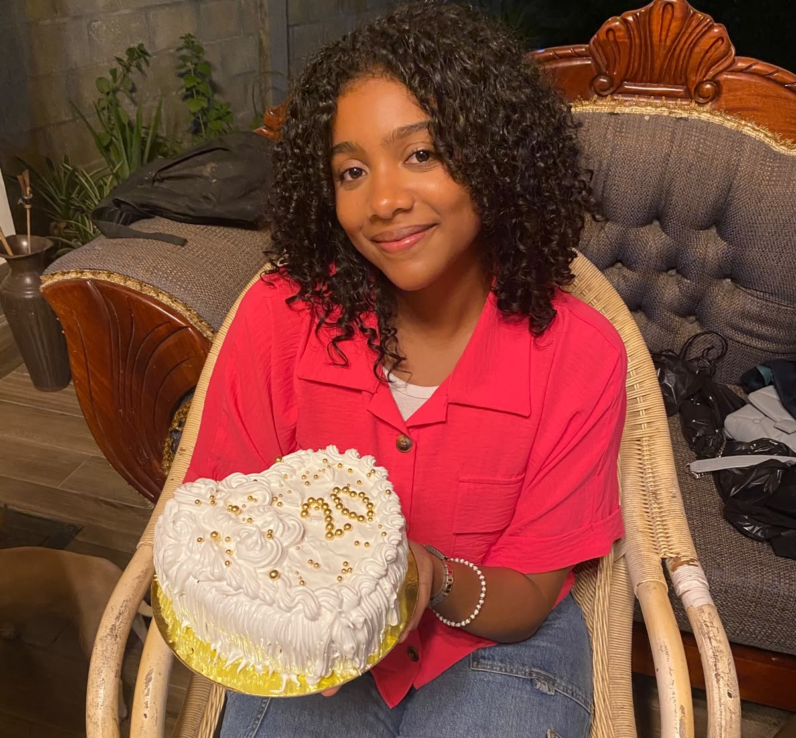
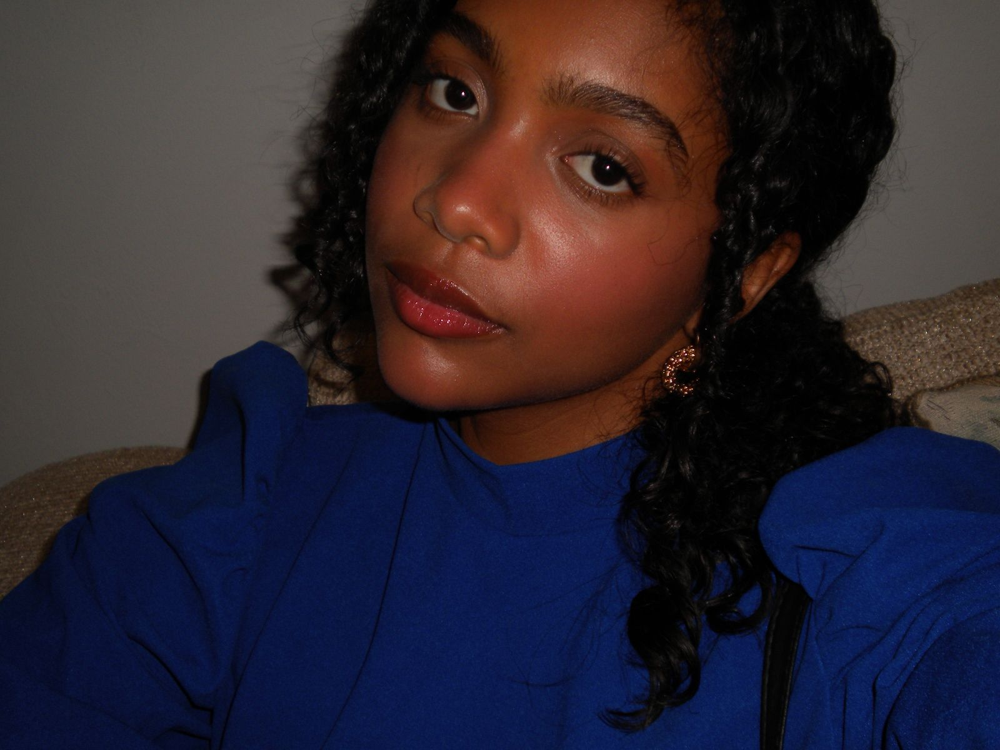
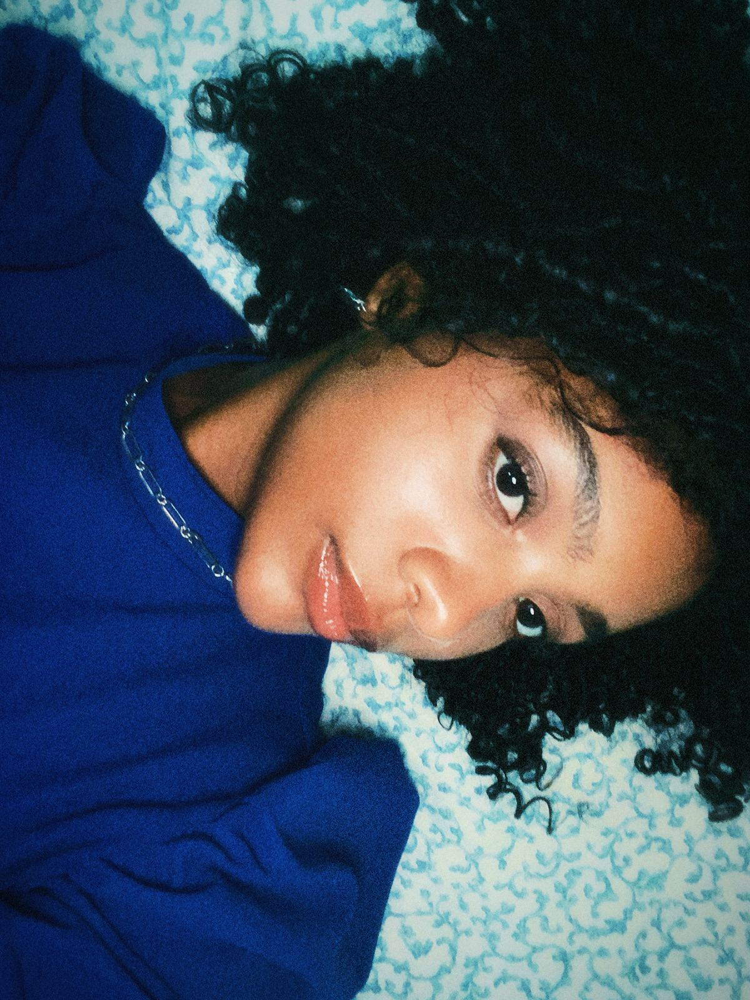
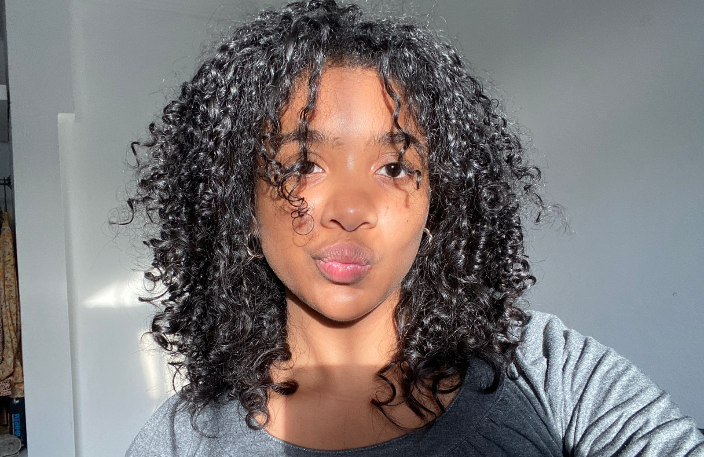

He preparado algo especial para ti.
Marliese Bahirma Días Sosa... el hermoso name de la persona que más amo en este mundo. Mi mente se queda corta al intentar expresar todos los pensamientos y sentimientos tan bonitos que tengo hacia ti. Eres la chica que más admiro en esta vida y, aunque a veces no encuentre las palabras perfectas, quiero que sepas que cada una de ellas nace desde lo más profundo de mi corazón. Gracias por llegar a la vida de este chico un poco terco, medio difícil... y aun así decidir quedarte. ❤️ Esta es una pequeña carta hecha especialmente para ti. Espero que disfrutes cada palabra, porque todas fueron escritas pensando únicamente en ti. <333

Quizás no esperabas que esta carta llegara después de los pequeños inconvenientes que tuvimos, e incluso llegaste a pensar que ya no existiría. Pero si hay algo que he aprendido es que un solo día hablando contigo basta para inspirarme a escribirte páginas enteras, o incluso una canción si fuera necesario. Porque cuando se trata de ti, las palabras aparecen solas. Lo único que deseo es que la vida te regale todo lo bonito que mereces, porque eres una mujer increíble y me siento inmensamente orgulloso de poder decir que eres la chica que ocupa mi corazón. Amo cada parte de ti, tu cuerpo, tu sonrisa y cada pequeño detalle que algunas personas podrían llamar imperfecciones. Para mí, esas "imperfecciones" solo hacen que quiera amarte todavía más y hacerte sentir la mujer más cómoda, segura y amada del mundo. Amo cuando sacas tu lado peleón porque sé que también forma parte de quien eres, pero amo aún más cuando dejas volar esa creatividad tan hermosa que tienes y me sorprendes con tu forma de ver la vida.

No cambiaría ninguno de los momentos que he vivido contigo, ni siquiera por todo el oro del mundo. Mi mayor anhelo en esta vida es construir un futuro a tu lado, donde seamos un solo equipo, apoyándonos, amándonos y caminando juntos hasta el fin de nuestros días. No me interesa mirar hacia otro lugar porque mi corazón ya encontró el sitio donde quiere quedarse. Pensar que algún día pudieras no estar conmigo es suficiente para entristecerme, porque uno de mis mayores placeres es simplemente verte, especialmente cuando eres tú al natural: con tu cabello un poco desordenado, tus ojitos con esas pequeñas ojeras que tanto adoro, sin preocuparte por aparentar nada. Ahí es cuando más hermosa me pareces. Amo tu cabello cuando está rizado porque te ves tan tierna que dan ganas de abrazarte para siempre, y cuando lo llevas liso no puedo evitar pensar que tengo a mi lado un mujerón increíble. Me emociona cuando me presumes con tus amigas, pero, sobre todo, amo que seas una persona que me acerca más a Dios y me motive a buscarlo cada día. Ese es, sin duda, el regalo más grande que me has dado. Gracias por estar siempre para mí cuando más te necesito, por hacer de mi vida un lugar mejor y, sobre todo, gracias por ser mi mayor bendición. ❤️

Feliz cumpleaños mi amor.